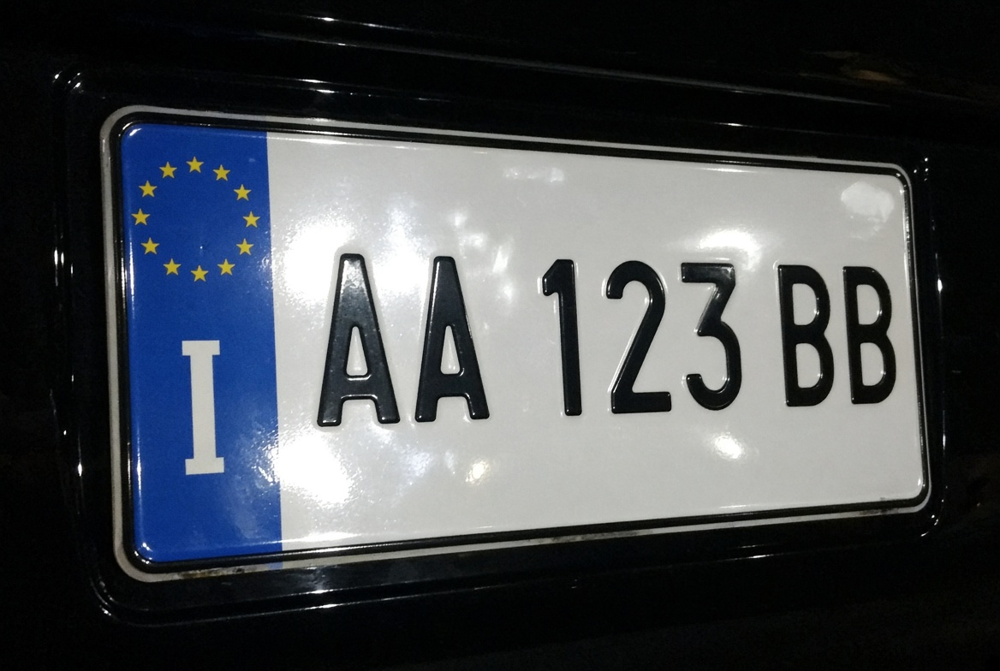
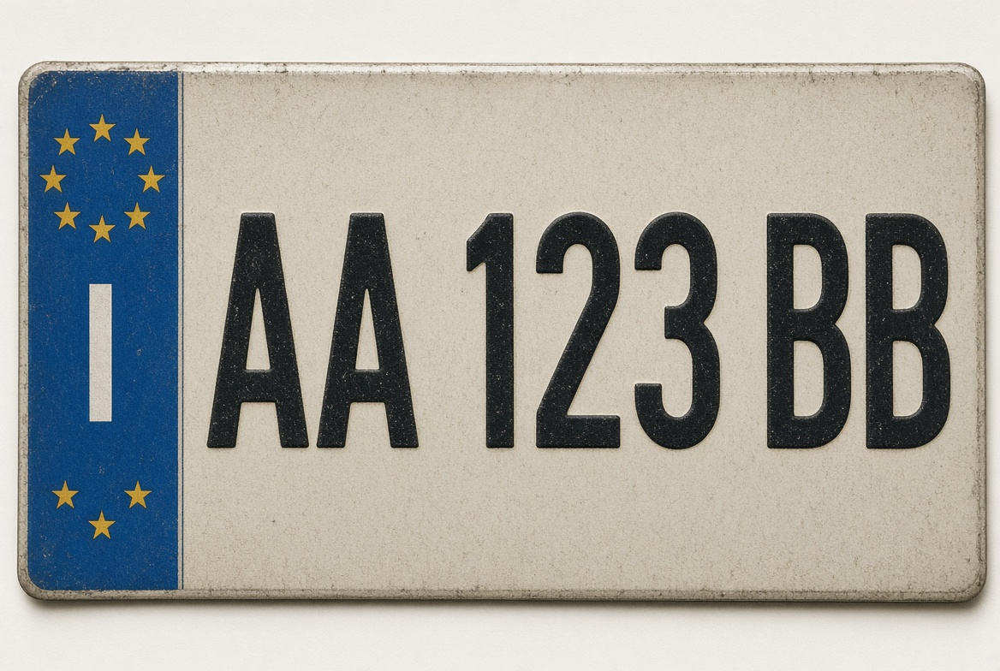
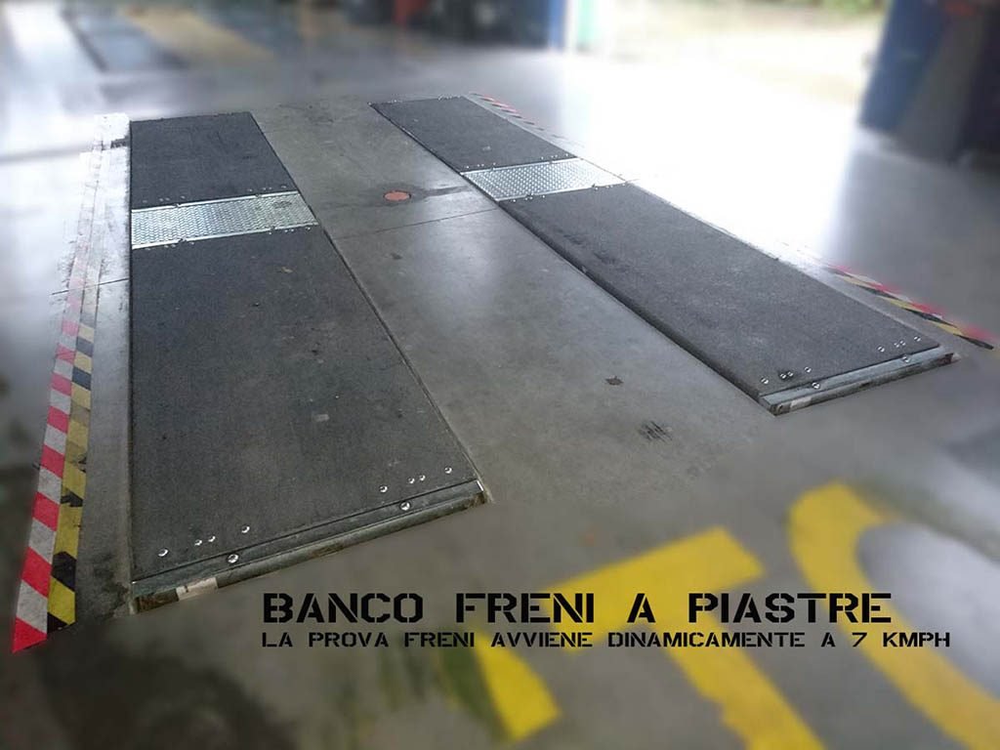
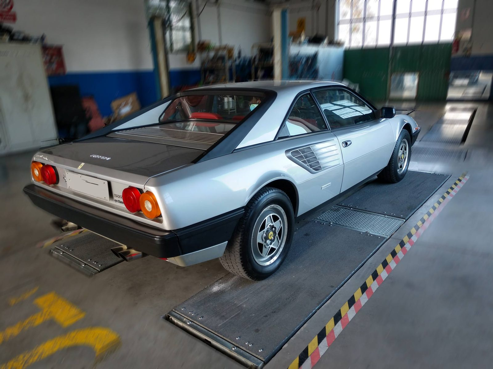

Controlliamo il veicolo secondo la procedura ministeriale e registriamo l’esito.
Porta la carta di circolazione e, se puoi, prenota: così non aspetti in officina.
Sant'Egidio alla Vibrata (TE) · Viale Kennedy, 301
Cosa facciamo
Revisione ministeriale
Controllo periodico obbligatorio, con esito registrato e annotazione sulla carta di circolazione.
Pre-revisione
Un controllo prima della prova ufficiale, utile se hai dubbi su freni, luci o gas di scarico.
Auto, moto e leggeri
Autovetture, motoveicoli, ciclomotori e veicoli per trasporto cose fino a 3.500 kg.
Cosa viene controllato
La revisione non è un tagliando. È un controllo di sicurezza e di emissioni, con prove su banco e verifiche visive.
Freni di servizio e freno di stazionamento
Sterzo, sospensioni e giochi
Pneumatici, cerchi e profondità del battistrada
Luci, indicatori di direzione e orientamento dei fari
Gas di scarico e rumorosità
Telaio, cristalli, cinture, targa e documenti del veicolo
Richiamo airbag Takata, tramite numero di telaio
Targa: caratteristiche e controlli in revisione
Durante la revisione la targa serve a identificare il veicolo (insieme al numero di telaio). Deve essere conforme al Codice della Strada, integra, leggibile e correttamente installata. Una targa non a norma può impedire il superamento della revisione o comportare sanzioni.
Caratteristiche principali (autovetture)
Formato attuale (dal 1994): combinazione alfanumerica AA 000 AA (due lettere, tre numeri, due lettere). Fondo bianco riflettente con caratteri neri.
Dimensioni:
Anteriore: 360 × 110 mm
Posteriore standard (una riga): 520 × 110 mm
Posteriore a due righe: 297 × 214 mm (quando lo spazio non consente la standard)
Bande blu: a sinistra con stelle dell’UE e lettera “I”; a destra opzionale (anno di immatricolazione e/o sigla provincia).
Materiale riflettente: la superficie deve “risplendere” quando viene illuminata (es. dai fari di un’altra auto di notte). Non basta che sia bianca: deve essere riflettente.

Riflettente — risplende

Non riflettente — opaca / scolorita
Installazione: fissata in modo stabile nelle sedi predisposte dal costruttore, non inclinata, non oscillante, non coperta (nemmeno parzialmente da accessori, portabici, gancio traino, pellicole, adesivi, sporco, fango o neve).
Leggibilità: i dati devono essere sempre chiaramente e integralmente leggibili (art. 102 CdS).
Controlli da verificare sulla targa (prima della revisione)
⚠
Verifica questi punti: se uno non è rispettato, la revisione può essere respinta
Presenza e posizione corretta — targa anteriore e posteriore fissate nelle sedi previste, non inclinate né oscillanti.
Integrità fisica — supporto non piegato, deformato o danneggiato; caratteri intatti.
Leggibilità completa — lettere e numeri chiaramente e integralmente leggibili (niente sporco, fango, neve, adesivi o coperture).
Superficie riflettente — la targa deve “risplendere” quando viene illuminata (visibile di notte con i fari). Se è opaca o scolorita non va bene.
Nessuna alterazione — vietati ritocchi con pennarelli/vernici, adesivi, iscrizioni o manomissioni che creino equivoco.
Corrispondenza documenti — targa identica a quella sulla carta di circolazione e associata al telaio.
Se la targa è deteriorata al punto da non essere più leggibile o non riflettente, richiedi prima la reimmatricolazione. Non “ritoccare” lettere e numeri: è alterazione.
Sanzioni principali
Targa non chiaramente e integralmente leggibile (sporca, usurata, coperta, deformata) — art. 102, comma 7 CdS: sanzione amministrativa da 42 a 173 euro.
Targa non riflettente o con iscrizioni che confondono l’identificazione — art. 100: da 26 a 102 euro, con possibile ritiro della targa e fermo amministrativo fino a regolarizzazione.
Targa non propria o contraffatta — art. 100: da 2.046 a 8.186 euro, più fermo amministrativo (e confisca in caso di reiterazione).
Falsificazione, manomissione o alterazione della targa: rilevanza penale (applicano le norme del Codice Penale), oltre a sanzioni accessorie.
Mancanza, posizione o installazione non conforme: sanzioni amministrative (generalmente da 87 a 344 euro circa, a seconda della fattispecie).
Gli importi delle sanzioni amministrative sono soggetti ad aggiornamenti periodici. I riferimenti principali sono gli articoli 100 e 102 del Codice della Strada. Per la sostituzione della targa rivolgiti alla Motorizzazione Civile o a un’agenzia autorizzata (costo indicativo della pratica intorno ai 200 euro, salvo difetti di fabbricazione che possono essere gratuiti).
Quando farla
Prima revisione
Per le auto private, entro la fine del mese di prima immatricolazione, quattro anni dopo. Conta la data sulla carta di circolazione, non quella di acquisto.
Poi ogni 2 anni
Le revisioni successive vanno fatte ogni due anni, entro il mese dell’ultima revisione. Taxi, NCC e alcuni veicoli pesanti hanno scadenza annuale.
Scadenze indicate dal Ministero delle infrastrutture e dei trasporti per autovetture e veicoli fino a 3.500 kg. Per i casi particolari conviene controllare la carta di circolazione.
Come funziona
Prenoti. Telefona e indica targa e tipo di veicolo.
Ti presenti. Con la carta di circolazione, all’orario concordato.
Controlliamo. Prove su banco, luci, emissioni e verifica visiva.
Esito. Se è regolare, la revisione viene registrata. Se qualcosa non passa, ti diciamo cosa sistemare e quando ripresentarti.
Prova freni a piastre
Nel centro la prova dei freni avviene su banco a piastre, in modo dinamico: il veicolo passa sulle piastre a circa 7 km/h e l’impianto misura la forza frenante.

Banco freni a piastre. La prova avviene dinamicamente a 7 km/h.

Il veicolo sale sulle piastre per la verifica dei freni.
Non è un controllo a veicolo fermo sui rulli. Si frena mentre si avanza a bassa velocità: così si misura l’efficienza dei freni di servizio e del freno di stazionamento nelle condizioni della prova ufficiale.
Strumenti utili
Link per verificare oli, filtri, batterie, posizione presa OBD e pratiche del veicolo.
Richiami di sicurezza
Verifica se il veicolo è interessato da un richiamo, airbag Takata compreso.